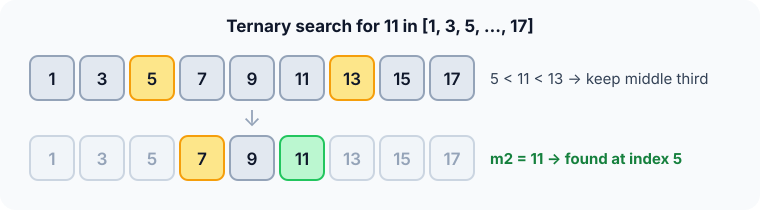

Prerequisites
- Binary search: ternary search is its three-way cousin.
- Logarithms in different bases: $\log_3 n = \log_2 n / \log_2 3$.
- Unimodal functions: values go up, then down, like a hill.
The analogy
Everyday analogy
Looking for a word in a dictionary, you could put two bookmarks at one third and two thirds of the way through. The word is before the first, after the second, or between them.
Ternary search does this on a sorted array. Two probes decide which third the target is in, and the other two thirds are thrown away.
How it works
Data requirement: a sorted array to search for a value, or a unimodal function (up then down) to find its peak.
Start with one search by hand
Look for 11 in [1, 3, 5, 7, 9, 11, 13, 15, 17], indices 0 to 8. A third of the range is $(8 - 0) / 3 = 2$. Guess first, then open "Check".
Example: predict before you read
Step 1. The probes are m1 = 0 + 2 = 2 and m2 = 8 - 2 = 6. Predict their values.
Check
a[2] = 5 and a[6] = 13.
Step 2. Cover the next line and guess: 11 is bigger than 5 and smaller than 13. Which third do you keep?
Check
The middle third, indices 3..5: [7, 9, 11].
Step 3. Now a third of 3..5 is 0, so m1 = 3 and m2 = 5. Predict the result.
Check
a[5] = 11: found at index 5. 2 rounds, 4 probes in total.

Quick recall: Before reading further, cover the text above and say out loud: what do the two probes tell you in one round?
Check your answer
Whether the target is in the left third, the middle third or the right third, so two thirds can be discarded.
Finish the picture: a hilltop
Ternary search shines on a hill-shaped function. Find the peak of $f(x) = -(x - 4)^2$ on $0 \le x \le 9$.
- Round 1. Probes at $x = 3$ and $x = 6$: $f(3) = -1$ and $f(6) = -4$. Predict: which third can't hold the peak?
Check
$f(3) > f(6)$, so the peak is left of 6: drop $(6, 9]$ and keep $[0, 6]$.
- Round 2. Probes at $x = 2$ and $x = 4$: $f(2) = -4$ and $f(4) = 0$. Predict the next range.
Check
$f(2) < f(4)$, so the peak is right of 2: keep $[2, 6]$. The range keeps closing in on 4.
Quick recall: Without scrolling up, say out loud: on a hill, why can comparing $f(m_1)$ and $f(m_2)$ rule out a third?
Check your answer
If $f(m_1) < f(m_2)$, you're still climbing at $m_1$, so the peak can't be left of $m_1$. If $f(m_1) > f(m_2)$, you're already descending at $m_2$, so it can't be right of $m_2$.
The rule in plain words
Place two probes at one third and two thirds of the range. If either one is the target, stop.
Otherwise keep the left third if the target is smaller than the first probe, the right third if it's bigger than the second, or else the middle third.
Quick recall: Before you read the code, write the three steps of one round in your own words. Then check below.
Check your answer
1. Pick two probe points that split the range into thirds. 2. Check whether either is the target. 3. Keep the one third that can still contain it.
The code
Read this code after you have done one search by hand. It will make more sense.
int ternary_search(const int a[], int n, int x) {
int lo = 0, hi = n - 1;
while (lo <= hi) {
int third = (hi - lo) / 3;
int m1 = lo + third, m2 = hi - third;
if (a[m1] == x) return m1;
if (a[m2] == x) return m2;
if (x < a[m1]) hi = m1 - 1; /* left third */
else if (x > a[m2]) lo = m2 + 1; /* right third */
else { lo = m1 + 1; hi = m2 - 1; } /* middle third */
}
return -1;
}Definition
What you just did, in one line: ternary search splits the range with two probes into three parts and keeps the one part that can contain the target, or the peak of a unimodal function.
flowchart TD
A["m1 = lo + third, m2 = hi - third"] --> B{"a[m1] or a[m2] equals x ?"}
B -->|yes| C["Return that index"]
B -->|no| D{"x < a[m1] ?"}
D -->|yes| E["Keep left third"]
D -->|no| F{"x > a[m2] ?"}
F -->|yes| G["Keep right third"]
F -->|no| H["Keep middle third"]
E --> A
G --> A
H --> A
How fast is it?
Quick recall: Before looking at the formula, predict: ternary search has fewer rounds than binary search. Does it make fewer comparisons?
Check your answer
No. Each round costs 2 comparisons instead of 1, and that more than cancels the saving in rounds.
There are $\log_3 n$ rounds of 2 comparisons. Converting to base 2:
$$2 \log_3 n \;=\; \frac{2}{\log_2 3} \log_2 n \;\approx\; 1.26 \, \log_2 n.$$Still $O(\log n)$, but about 26% more comparisons than binary search on a sorted array.
| Best | Average | Worst | Extra space | Data requirement |
|---|---|---|---|---|
| $O(1)$ | $O(\log n)$ | $O(\log n)$ | $O(1)$ | Sorted array, or unimodal function |
Warning
For finding a value in a sorted array, ternary search is worse than binary search, despite the bigger cut per round. Use it for peaks of unimodal functions, where binary search doesn't apply directly.
Exam tip
A favourite trick question: "Is ternary search faster than binary search?" Answer: same $O(\log n)$, but more comparisons, because $2 \log_3 n > \log_2 n$.
Common mistakes
- Claiming it beats binary search on sorted arrays because $\log_3 n < \log_2 n$, forgetting the 2 comparisons per round.
- On a unimodal function, dropping the wrong third: when $f(m_1) < f(m_2)$, drop the left third.
- Using it on a function with flat parts or several peaks, where equal values can't tell you which side the peak is on.
Try it yourself
Exercise 1 (warm-up)
Search for 3 in [1, 3, 5, 7, 9, 11, 13, 15, 17]. Which third do you keep after round 1?
Hint
The round-1 probes are again 5 and 13.
Answer
3 < 5, so keep the left third, indices 0..1. Round 2 probes indices 0 and 1 and finds 3 at index 1.
Exercise 2 (a bit harder)
For $n = 3^{10} = 59{,}049$, how many comparisons does ternary search need in the worst case, compared with binary search? Write your answer down before you open it.
Show answer
Ternary: about 10 rounds × 2 = 20 comparisons. Binary: $\lfloor \log_2 59049 \rfloor + 1 = 16$. Binary search wins.
Did you know?
Did you know?
A refined version, golden-section search, places the probes at the golden ratio so one probe can be reused next round. Each round then costs only one new function evaluation.
That's why ternary search matters: tuning one setting to maximise a score, like the best price or the best angle, is a unimodal search problem.
Key points to remember
If you remember one thing from each line, remember the because.
- Each round keeps one third because two probes split the range into three parts and only one can hold the target.
- It is $O(\log n)$ because shrinking by a factor of 3 each round takes $\log_3 n$ rounds.
- It loses to binary search on sorted arrays because $2 \log_3 n \approx 1.26 \log_2 n$ comparisons.
- It works on hill-shaped functions because comparing $f(m_1)$ and $f(m_2)$ tells you which side you're climbing on.
- Extra space is $O(1)$ because it only keeps the range ends and two probes.
Self-check questions
Answer these in order, out loud. They follow the page, so your answers become the script of your video.
- How is ternary search like using two bookmarks in a dictionary?
Sample answer
Two bookmarks split the book into thirds. Checking them tells you which third the word is in, and you ignore the other two.
- Walk through a search for 11 in [1, 3, 5, …, 17].
Sample answer
Round 1 probes 5 and 13; 11 is between them, so keep [7, 9, 11]. Round 2 probes 7 and 11 and finds 11 at index 5.
- Why does the code check
x < a[m1]beforex > a[m2], and keep the middle otherwise?A good answer covers all three cases.
Sample answer
Smaller than the first probe means the left third; bigger than the second means the right third. If neither, the target must be between the probes, so the middle third is the only option left.
- So what is ternary search, in one sentence?
Sample answer
It splits the range into thirds with two probes and keeps the third that can contain the target or the peak.
- Why is it worse than binary search for finding a value in a sorted array?
A good answer compares comparisons, not rounds.
Sample answer
It uses 2 comparisons per round for $\log_3 n$ rounds, about $1.26 \log_2 n$ in total. Binary search uses about $\log_2 n$.
- What are its best, average and worst cases?
Sample answer
Best $O(1)$ if a first probe hits the target. Average and worst $O(\log n)$. Extra space $O(1)$.
- How does ternary search find the peak of a hill-shaped function?
Sample answer
Compare $f(m_1)$ and $f(m_2)$. If $f(m_1)$ is smaller, you're still climbing, so drop the left third; otherwise drop the right third. Repeat until the range is tiny.
- If you had to teach this to a friend in 2 minutes, what would you leave out, and why?
Sample answer
I'd leave out the base-change formula and golden-section search. I'd keep the two-bookmark analogy, one search on the example, and "$O(\log n)$, worse than binary for arrays, great for hilltops".
External resources
- GeeksforGeeks: Ternary search: an article with code for sorted arrays.
- Wikipedia: Ternary search: the unimodal-function version.
- CP-Algorithms: Ternary search: finding the maximum of a function, with pitfalls.
Videos
- YouTube search: ternary search on a unimodal function: pick a short explanation.